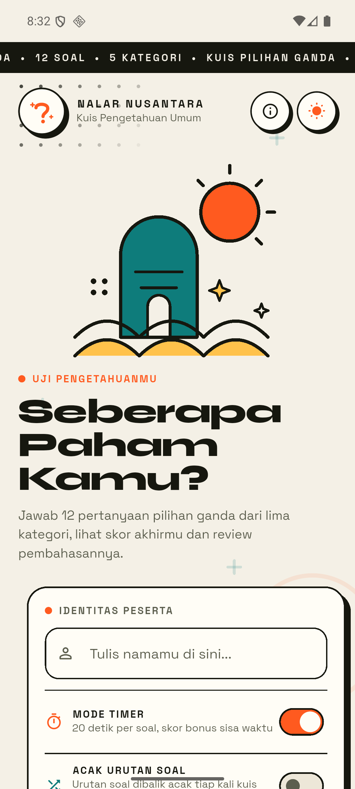
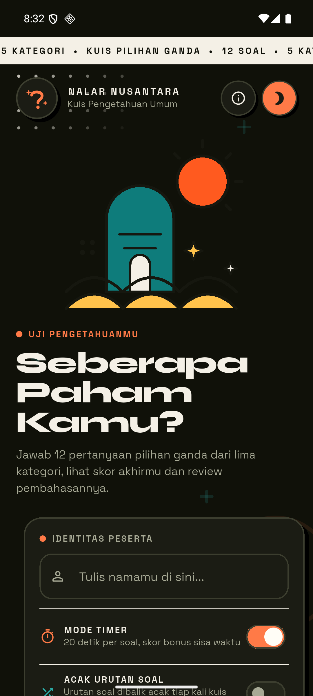
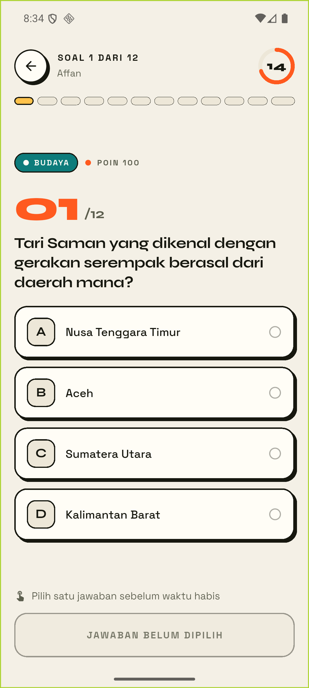
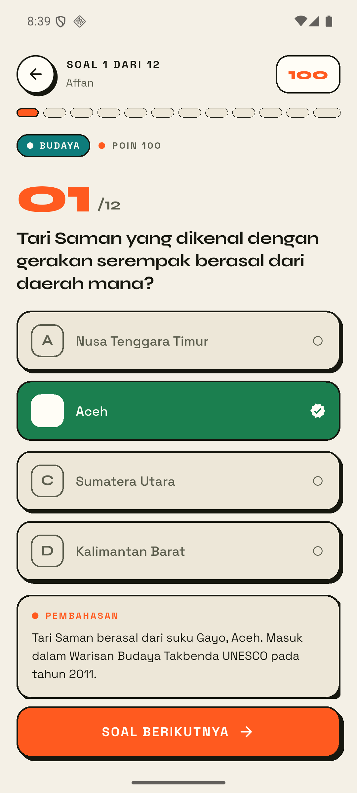
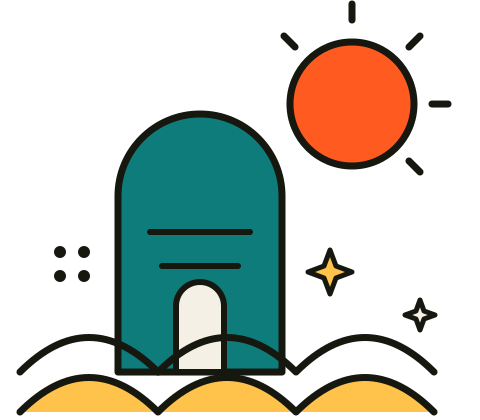

Aplikasi Kuis Pilihan Ganda — Flutter, Provider, Dual Theme
Kuis pengetahuan umum bertema Indonesia: pengguna memasukkan nama, memilih kategori, mengerjakan 12 soal (dengan/tanpa timer 20 detik), lalu melihat skor, predikat, statistik, rekor pribadi, dan pembahasan tiap soal. Tanpa database — data dummy lokal.
| Kriteria | Implementasi |
|---|---|
| Stateless + StatefulWidget | Welcome/Quiz = Stateful (animasi, validasi) · Result, Review, About, widget = Stateless |
| Min. 2 halaman + navigasi | 5 halaman + transisi kustom fade/slide/scale |
| Widget reusable terpisah | 15 file di lib/widgets/ (NeoCard, OptionTile, ScoreRing, …) |
| Aset gambar / ikon | SVG buatan sendiri + ikon launcher adaptive (PNG) |
| Font kustom | Syne (display) + Space Grotesk (teks), bundled lokal |
| Ukuran dinamis | context.fs()/sz()/gap() — relatif layar, tanpa hardcode |
| State management | Provider di atas MaterialApp — progres aman saat rotasi/pindah halaman |
| Tanpa database | Bank soal dummy lokal + shared_preferences |
| Commit GitHub bertahap | 23 commit per fitur |
| Desain sedetail mungkin | Neo-editorial “bone & ink” + animasi berlapis |
ThemeController + 2 ThemeData penuh; toggle di halaman sambutan; splash Android adaptif mode gelap.
ContentMaxWidth untuk tablet/web, grid statistik 1→3 kolom, TextScaler dibatasi.
+ halaman Tentang (kriteria & kredit) dari ikon info. Empat ChangeNotifier diregistrasi di atas MaterialApp — progres kuis tidak hilang saat rotasi atau pindah halaman:
MultiProvider( providers: [
ChangeNotifierProvider(create: (_) => ThemeController()), // tema
ChangeNotifierProvider(create: (_) => QuizController()), // progres kuis
ChangeNotifierProvider(create: (_) => ScoreStore()), // rekor skor
ChangeNotifierProvider(create: (_) => PrefsStore()), // preferensi
] )




$ flutter analyze No issues found! $ flutter test 00:03 +15: All tests passed!
Repo: github.com/affanjr07/UTS_PEMMOB · branch main · setiap commit lolos analyze + test sebelum di-push.

Nalar Nusantara — kuis, skor, dan pembahasan dalam balutan desain neo-editorial.